成员介绍
成员介绍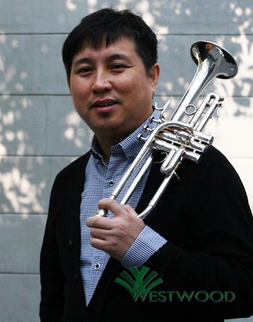
秦国臣，小号演奏家，混音师。现任中间和声录音棚艺术总监。当今中国最活跃的小号演奏家之一。他1993年毕业于中央音乐学院，师从柏林教授。1993－2009年，曾就职于北京交响乐团及中国交响乐团，任第一小号，曾多次出访过欧洲、美洲、澳洲及东南亚各国演出，交流。同时，他作为北京录音界的首选小号演奏家，录制了大量电影、电视剧、音乐剧、歌剧、舞剧及各种晚会等音乐作品及音乐专辑。2013年5月，他的个人古典小号专辑正式出版发行。制的主要作品： 电影《集结号》、《让子弹飞》、《建国大业》、《建党伟业》、《无间道》Ⅱ Ⅲ、日本动画片《奥特曼》、《北京奥运记忆》、《可可西里》、电视剧《永不磨灭的番号》、《我的团长我的团》、《闯关东》、《亮剑》、《无愧苍生》、《火蓝刀锋》、《激情燃烧的岁月》、《玉碎》、《江塘集中营》、《走向共和》、《希望的田野》、《画魂》、《康熙王朝》、《黎明前的暗战》、《乔家大院》、《插树岭》、《老娘泪》、《三国演义》、《春风化雨》、《革命人永远是年轻》、西安音乐剧《秦》（与法国著名作曲家Williams及指挥过国交及上交的美国指挥家Peter合作）大型交响音画《丝路雅丹》、《印象刘三姐》、歌曲及专辑《让爱，因为我们燃烧》、《难忘今宵》、《祈祷》、《新国风》、《短歌行。关天栋》、《如果你嫁给我》、《南泥湾》、《北京欢迎你》、《赤壁怀古》、《伶歌2》《北京祝福你》、《国乐炫技》、《茉莉花》、《极致立体声小号。辉煌》、《凌波仙子》、《英雄美人》、《麦田守望者》等…
自1996年起，他开始踏入音乐的另一领域：录音专业，凭借其深厚的音乐修养，经历多年的深入学习与研究，终于在第二专业的录音领域中形成了自已独道的风格，尤其在管弦乐的混音合成中，以其特有的视觉来诠释各类音乐作品，受到各专业领域音乐家的好评。
主要混音作品：电影记录片《北京奥运记忆》、电视剧《叶问》主题曲、《热带风暴》主题曲及音乐、舞剧《天蝉地》、《金面王朝》、《二泉映月》、歌曲及专辑《老支书》、《我是你肩上的一颗星》、《美丽中国》、《我爱灯塔我的家》、《出租车》、《我的祖国我的家》、《我的大山我的家》、《唱给妈妈的歌》、中国音乐金钟奖作品《战车夜行》、《丝绸之路》、《民族的记忆》、《原乡人》、《你的生命如此美丽》、《老师你好吗》、《军礼》、《青青竹吟》、《魅力女人》、《请到房县来》、《越来越美》、《亲吻你再久依然恋着你》、《儿女本色》、《鲍天宇演唱专辑》、大型民族歌舞《碧海云天金银滩》、音乐剧《天水》、《白鹿原》等...
Biography of Guo-Chen Qin Guo-Chen Qin，Trumpet soloist, is the president of Westwood Brass. He was graduated from Centre Conservatory of Music, studied trumpet with Dr. Lin Bai. He has been the principle trumpet of Beijing Symphony Orchestra & China National Symphony Orchestra from 1993-2009. He has performed in many countries of Europe, America, and Australia & Asia. From 2000 to 2012, Qin has been the first-call trumpet player & soloist for all the major recording studios in Beijing. Qin can be heard on hundreds of movies and television scores, as well as countless military, folk, opera, dancing opera, music opera and pop songs. Such as: the movie “ASSEMBLY ", "Let the Bullet Fly", " The Great Cause of China's Foundation ", " Beginning of The Great Revival ", "Infernal Affairs" Ⅱ Ⅲ, TV series " Designation Forever ", " My Chief & My Regiment ", " Brave The Journey To The Northeast ", "Drawing Sword" and so on...
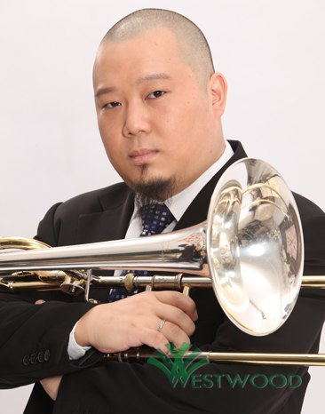
赵欣，次中音长号、低音长号演奏家。现任中国爱乐乐团首席长号、中央音乐学院客座长号教授、法国布菲公司旗下“古托”品牌长号中国地区形象代言人。先后师从于胡炳余、姜德操、裴佑春、徐东晓、陈玉成、赵瑞林。1994年考入中央音乐学院附中。1998年以全国考生第一名的优异成绩考入中央音乐学院,同年参加中央音乐学院附中优秀毕业生音乐会。2001年（大学四年级）考入中国爱乐乐团,担任低音长号演奏员。2002年毕业于中央音乐学院管弦系。2008年获得中国爱乐乐团长号副首席职位。2009年担任中国爱乐乐团首席长号，同年被聘为中央音乐学院客座长号教授。在爱乐乐团工作期间，参加了2001-2011十年音乐季的全部交响乐演出，曾随团出访欧美各国。
2009-2010年曾担任维也纳“沙戈尔”品牌长号中国地区代言人。
2010年组建京城长号&低音铜管重奏组（Beijing Trombone & Low Brass）, 并在第三届北京国际长号大号艺术节上公开首演，以极其职业化重奏合作意识以及精湛的演绎博得国内外长号大师及业界的高度好评与赞誉。
2000年起从事职业录音领域的长号及低音长号录音工作至今，为大量国内外电影、电视剧、唱片专辑、大型晚会及国家重要赛事录制音乐，为录音事业作出卓越贡献。
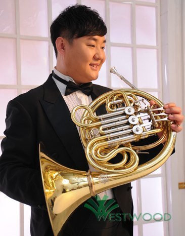
姜峰，圆号演奏家。1981年出生与黑龙江省牡丹江市的一个艺术之家，从小就受父母的熏陶学习音乐。1996年考入黑龙江省艺术学校管弦系学习圆号，师从黑龙江省歌舞剧院首席圆号金龙伯老师。2000年考入中央音乐学院管弦系，师从中央音乐学院圆号教授张诚心，在张老师的精心指导下学习了大量不同时期不同形式的练习曲，乐曲及乐队片段。2003年担任中国青年交响乐团圆号首席，在校期间多次接受外国专家指导并给予了充分的肯定和较好的评价。2004年以管弦系管乐最高分优异的成绩毕业。同年9月份考入中国交响乐团长期聘用演奏员。随团出访韩国日本及国内等地巡演，积累了大量的乐队经验。2006年8月在首届“中国圆号教学成果展演暨学术研讨会”的圆号比赛中荣获专业成年组第三名。
2007年7月荣获“中央音乐学院第六届管乐室内乐”铜管独奏比赛圆号组第二名。同年考入中国爱乐乐团圆号演奏员至今，在团期间每年参加北京国际音乐节的演出以及中央电视台的新年音乐会，并随团出访梵蒂冈，意大利，维也纳，德国，美国等地巡回演出。
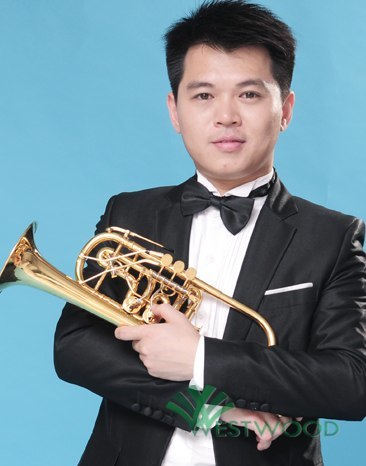
王晨醒，小号演奏家。9岁开始学习小号。1993年考入中央音乐学院附小，师从于我国著名小号演奏家、教育家冀瑞铠教授。1994年以管乐学科第一名的成绩考入中央音乐学院附中。2000年，以管乐系第一名的优异成绩考入中央音乐学院管弦系。2002年2月考入德国Detmold音乐学院，师从于世界著名小号大师Max.Sommerhalder教授。在德期间，多次与Detmold歌剧院交响乐团、Gotingen交响乐团合作，并以独奏家身份随德国著名的Bach Solisten室内乐团进行全德巡回演出，录制发行了演出现场版CD。2005年担任Gotingen交响乐团的小号演奏员。
2006年担任上海爱乐乐团的小号首席。
2007年在德国录制了首张个人演奏专辑。2008年起担任中国国家芭蕾舞团交响乐团小号首席。
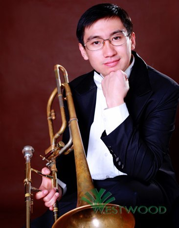
谭琛于，长号演奏家。12岁跟随青岛海信交响乐团首席长号高正兴老师开始学习长号。1999年以专业第一的成绩考入中央音乐学院附中，师从于著名长号教育家赵瑞林教授。2004年获得中央音乐学院保送名额，被新加坡国立大学杨秀桃音乐学院录取并获全额奖学金，同年考入奥地利维也纳国立音乐与表演艺术大学。2005年赴维也纳就读，受教于维也纳交响乐团首席长号Otmar Gaiswinkler教授和维也纳爱乐乐团首席长号Dietmar Küblböck教授。在学习期间，曾多次与维也纳广播交响乐团，维也纳国家歌舞剧院合作演出。
2008年至2009年获得维也纳交响乐团实习长号席位。
2009年底被邀请参加“世界华人交响乐团”并担任首席长号。
2010年3月以最优秀的专业成绩毕业于奥地利维也纳国立音乐与表演艺术大学，获得演奏家文凭及硕士学位，同年考入中国国家大剧院管弦乐团，担任长号声部副首席。
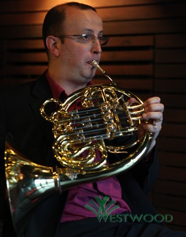
Reynald, a Musician of French Horn.Is the principle Horn of Beijing Symphony Orchestra now.He of Originally from Picardie ( France) , Reynald PARENT began his musical training at the age of seven under the guidance of Eric Brisse and Vincent Defurne at Doullens School of Music. Then, he continued his music studies at the Douai Conservatory of Music with Marc Barbier and Guy Mouy.In Douai, Reynald was awarded Gold medals in French Horn, Chamber Music and Musicianship.After successful studies at the CNSM of Paris, in the class of the world-renowned French Horn player Andre Cazalet, Reynald obtained a « Superior Diplôme » which included First Prize for French Horn and certificates for Chamber Music, Jazz, Musicianship and Orchestra.Reynald completed his training with Jacques Deleplanques, French Horn soloist with the Toulouse National Orchestra.
Reynald of Originally from Picardie ( France) , Reynald PARENT began his musical training at the age of seven under the guidance of Eric Brisse and Vincent Defurne at Doullens School of Music.
Then, he continued his music studies at the Douai Conservatory of Music with Marc Barbier and Guy Mouy. In Douai, Reynald was awarded Gold medals in French Horn, Chamber Music and Musicianship.
After successful studies at the CNSM of Paris, in the class of the world-renowned French Horn player Andre Cazalet, Reynald obtained a « Superior Diplôme »which included First Prize for French Horn and certificates for Chamber Music, Jazz, Musicianship and Orchestra.
Reynald completed his training with Jacques Deleplanques, French Horn soloist with the Toulouse National Orchestra.
In France, Reynald Parent has worked with the Paris Orchestra, French National Orchestra, National Orchestras of Capitol of Toulouse and Lille, “Ensemble Intercontemporain.” In Canada, Reynald worked with the Oshawa Durham Orchestra, working with such conductors as J.C Casadesus, Marco Parisotto, Michel Plasson, Marc Lefebvre, Maurice Bourgue, Charles Dutoit, and Tan Linhua.
Since 1998, Reynald Parent has been a holder of the Diploma of State Professors of French Horn where his professionalism, natural music sense, and warm magnificent sound was recognized, resulting in numerous invitations from countries throughout Europe and Asia for Master Class presentations.
In October 2000, Reynald joined the Shanghai Symphony Orchestra, serving as the orchestra's Principal French Horn. A position he held until June 2009.
From July 2009, Reynald Parent was appointed Professor of French Horn at the China Conservatory of Music, as well as Principal French Horn of the Beijing Symphony Orchestra.
In November 2010, Reynald Parent gave the world premier of the Concerto for French Horn and Wind Orchestra by chinese composer and conductor, Yu Jian Fang with the Beijing Wind Orchestra.
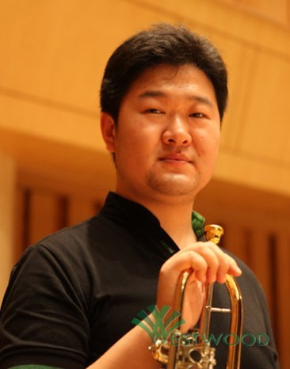
李德钦，小号演奏家。1986年3月10日出生于中华人民共和国辽宁省鞍山市。现中国爱乐乐团小号副首席，毕业于上海音乐学院本科，师从著名小号演奏家，教育家陈嘉敏教授。1998年，开始学习小号。师从沈阳音乐学院附中小号教师王伟。2004年，考入上海音乐学院本科，得到了著名小号演奏家 教育家陈嘉敏教授的指导和栽培。2006年，参加“2006年上海国际电子音乐周”世界首演小号独奏曲《OIREB》展现了“循环呼吸”的技巧，（全曲4分20秒无气口）。2007年，所在的铜管五重奏组17F荣获上海音乐学院第二届“凌华杯”室内乐比赛一等奖。同年由于在学校的优异成绩获得了 “2007年YAMAHA音乐奖学金。2008年，由上海歌剧院交响乐团协奏演出了《维瓦尔第小号协奏曲》。
2008年，担任中国爱乐乐团小号演奏员，随团出访意大利，美国，德国，捷克，日本等等。
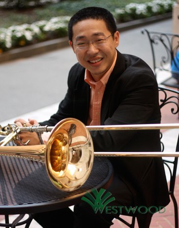
王炜，长号演奏家。现任国家大剧院管弦乐团低音长号职位。10岁跟随启蒙老师、山西大学长号教授张贵禄开始学习长号，11岁师从中国著名长号教育家胡炳余教授学习长号，12岁进入中央音乐学院附中。2002年以优异的成绩考入中央音乐学院。2003年考入新加坡国立大学杨秀桃音乐学院并获全额奖学金，先后师从Allen Meek和Shanoon Pittaway。2007年获新加坡国立大学杨秀桃音乐学院二等（上）荣誉学士学位，同年又以全额奖学金的优异成绩考入美国新英格兰音乐学院，师从Douglas Yeo和Norman Bolter。2008年，王炜获得新英格兰音乐学院协奏曲比赛第一名，他是建校一百多年以来唯一获此殊荣的低音长号学生，并且在波士顿与学院乐团首演了Daniel Schnyder的“subZERO”爵士风格协奏曲，波士顿交响乐团圆号演奏家Jonathan Menkis和低音长号演奏家Douglas Yeo都为此在美国iBerkshires新闻里写下了很高的评价。除此之外，他还在纽约、波士顿、新加坡、北京等许多城市成功举办了独奏音乐会。
2009年获新英格兰音乐学院演奏家文凭。
王炜频繁作为特邀演奏家与波士顿交响乐团、波士顿通俗管弦乐团、波士顿爱乐乐团、马来西亚爱乐乐团、新加坡交响乐团、澳门乐团及中国国家交响乐团合作，越来越受到世界知名乐团及著名指挥家的关注与认可。特别是在波士顿交响乐团的工作经历，使他在世界青年一代低音长号演奏家中的影响力与日俱增。
2009年他获得了波士顿交响乐团当年唯一的专项赞助，成为国际著名音乐节檀歌坞德Tanglewood Music Center的唯一低音长号成员。
2009年他还应邀参加了世界华人节日乐团在北京的演出。
2010年他成为Discovery Ensemble交响乐团的成员之一。与他合作过的指挥家有Lorin Maazel、James Levine、Charles Dutoit、Kurt Masur、Herbert Blomstedt、Rafael Fruhbeck de Burgos、Benjamin Zander、Huge Wolff、陈佐湟、徐新、水蓝、吕嘉、李心草、汤沐海等。
王炜是美国著名的Frequency Band长号室内乐团的成员之一，作为特邀音乐家参加了美国ETW长号音乐节在华盛顿的演出，也多次被麻省政府邀请参加演出，2009年他们的唱片”Phoenix”在美国出版发行。
2010年获新英格兰音乐学院硕士学位。
王炜在2010年和另外三位长号演奏家创建了美国Appollo长号四重奏，并且形成了他们自己的演出风格。2009年他在世界长号协会主席Don Lucas的邀请下参加了波士顿长号室内乐团。
王炜还是美国Artus铜管五重奏的创建成员之一，他们2008年成为新英格兰音乐学院多年以来唯一的荣誉铜管五重奏。Artus铜管五重奏在美国许多城市演出过专场音乐会，并举行了大师班，现已成为波士顿非常活跃的铜管五重奏之一。
2010年八月底，应新加坡国立大学杨秀桃音乐学院邀请举办个人独奏音乐会及大师班。
2011年出版了个人独奏现场录音专辑。
Wei Wang, Trombone player, is the bass trombone player of the Symphony Orchestra of National Center for the performing Arts. He began his study of the trombone from childhood, and well trained by the famous teachers. Then he entrance into the Centre Conservatory, the university of Singpo and the music conservatory of New England in US. and win the postgraduate finally. He was invited by Boston Symphony Orchestra, to cooperate as speceal player alwans, and be well known and by more and more famous orchestras and conductors.
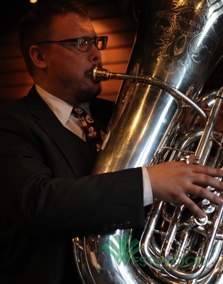
Micky Wrobleski ，a musician of tuba.Is the principle tuba of Beijing Symphony Orchestra now.He was born in Virginia, Minnesota, U.S.A.in 1974,He began his study of the tuba at the age of 16, From 1992 to 1997, Micky attended the University of Wisconsin-Eau Claire,where he studied tuba with Dr. Jerry A. Young.In 1997, Micky was chosen to be the Principal Tuba of the Chicago Civic Orchestra, the training orchestra of the world-renowned Chicago Symphony Orchestra.While in Chicago, Micky studied with Gene Pokorny, Principal Tuba of the Chicago Symphony Orchestra。Micky Wrobleski was born in Virginia, Minnesota, U.S.A.
in 1974,He began his study of the tuba at the age of 16, after 2 years of saxophone. At the age of 17 he began his music career performing as a member of the Twin Ports Wind Ensemble, a professional Wind Band made up entirely of college and high school music educators. From 1992 to 1997, Micky attended the University of Wisconsin-Eau Claire,where he studied tuba with Dr. Jerry A. Young.
In 1997, Micky was chosen to be the Principal Tuba of the Chicago Civic Orchestra, the training orchestra of the world-renowned Chicago Symphony Orchestra. While in Chicago, Micky studied with Gene Pokorny, Principal Tuba of the Chicago Symphony Orchestra, and was concurrently Principal Tuba with several of the orchestras in the Chicago region while also maintaining a busy studio recording, brass quintet, and private teaching schedule.
In 2002, Hu Yongyan invited Micky to become the Principal Tuba of the Shanghai Broadcasting Symphony Orchestra. A position Micky held, until, in 2003, Tan Lihua invited him to assume the Principal Tuba position with the Beijing Symphony Orchestra.
In 2005 Micky gave the Chinese premier performance of the Concerto for Tuba and Orchestra by American composer John Williams. In 2008, Micky gave the first ever solo tuba performance with the Taipei Wind Ensemble. On this concert, Micky performed Tubby the Tuba, Australian composer Barry McKimm's Tuba Concerto as well as Micky's own arrangements of The Blue Bells of Scotland, and The Carnival of Venice.
Micky has also brought to life several new works by Chinese composers featuring the tuba in a solo role. Currently, Wang Xi Ling is composing a new work for Micky and the Beijing Symphony Orchestra, there are also several composers (Macedonian, American, Chinese, Swiss, and Korean) who have written and are in the process of writing works for Micky.
In 1997, Micky founded Chicken Scratch Press, a music publishing company which focuses on the publication of music with special emphasis on the tuba.
Since 2005, Micky has been the first-call tuba player for all the major recording studios in Beijing. Micky can be heard on hundreds of movies and television scores, as well as countless military, folk, and pop songs.
In 2010, Micky was appointed Professor of Tuba and Euphonium at the China Conservatory of Music. Micky's students have gained employment in wind bands and orchestras and admittance to some of the most prestigious music schools in the United States and Europe.
During his tenure with the Beijing Symphony Orchestra, Micky has recorded Dvorak's 8th Symphony, Bartok's Concerto for Orchestra, Verdi's La Forza del Destino, Mussorgsky's Pictures at an Exhibition, Stravinsky's Firebird, Prokofiev's Romeo and Juliet, and Rachmaninoff's Symphony No. 3.
In Beijing, Micky maintains an active schedule balanced with orchestral performances, solo performances, chamber music, composing, teaching, studio recording, and his English Bulldog, Bully.
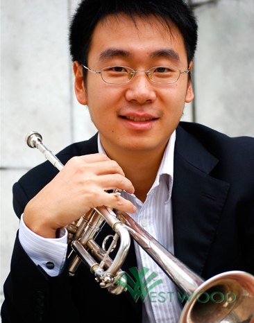
王与兵，小号演奏家。现任国家大剧院音乐厅管弦乐团小号声部副首席。2002年赴上海音乐学院攻读本科学位，师从前新加坡交响乐团首席小号----陈嘉敏教授，并获得学院人民奖学金和雅马哈（YAMAHA）管乐杰出人才奖学金。2006年赴美国留学攻读硕士学位，并考取Peabody音乐学院全额奖学金。师从巴尔第摩交响乐团小号 Edward Hoffman以及前加拿大铜管五重奏小号Joseph Burgerstaller。出任该院PSO交响乐团，PCO交响乐团首席小号。硕士毕业后，继续攻读演奏家文凭。在校期间，组建并成立了Shogun铜管五重奏并多次举办专场音乐会。2004、2006、2007年担任亚洲青年交响乐团首席小号，并随乐团多次赴亚洲多国及地区进行演出。2009年暑期参加美国著名的西部音乐节乐团Music Academy of the West。
2009-1010年考取美国新世界交响乐团New world Symphony Orchestra客座演奏员。
Yu-Bing Wang, Trumpet player,is the vice principle trumpet of the Symphony Orchestra of National Center for the Performing Arts. He attended ShangHai Conservatory of Music, studied with Dr. Jia-Min Chen. After graduated,he attended university of Peabody, and win the postgraduate. He was the principle trumpet of A sian Youth Symphony Orchestra in 2004,2006,2007. and performed in many countries with the orchestra. He attended in the Orchestra of Music Academy of the West. He was apointed the guest trumpet player of New World Symphony Orchestra.
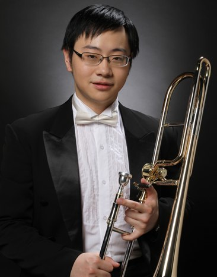
刘书畅，长号演奏家。生于北京，自幼学习钢琴，10岁加入金帆管乐团，并开始学习长号。1999年考入中央音乐学院附中，以优异的成绩完成学业，并于2005年考入中央音乐学院本科。2009年毕业后考入中国爱乐乐团，担任长号演奏员。在校期间曾跟随中国青年交响乐团参加过多位世界级指挥大师、作曲家的音乐会。包括巴伦博伊姆，谭盾，叶小刚等等。并获得中央音乐学院铜管乐独奏比赛一等奖。在中国爱乐乐团工作期间更参加过国内外访问和多次国际文化交流音乐会。包括赴美国、意大利巡演音乐会等等。有着越来越丰富的舞台经验。